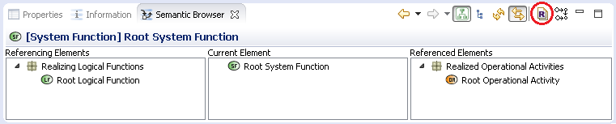
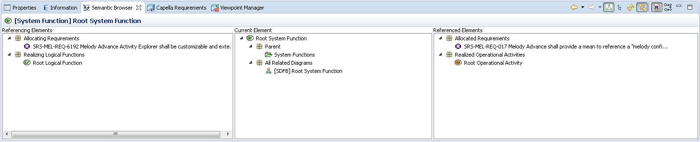
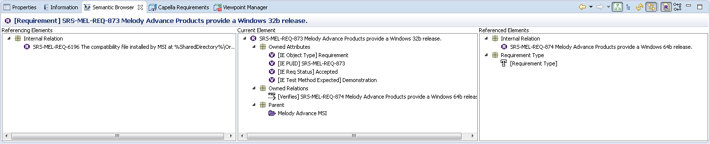

By default, for performance reasons, Requirements VP elements are not displayed in the Semantic Browser.
To show them, click on the encircled toggle button:
On model elements, diagrams and tables:
Allocating Requirements,
Allocated Requirements.
Example with a System Function:
On Requirements elements:
Allocating model elements (for performance reasons, diagrams and tables are not displayed),
Allocated Requirements (same remark as above),
Referencing Requirements via incoming Internal Relations,
Referenced Requirements via outgoing Internal Relations,
The Requirement's type.
Example with a Requirement:
